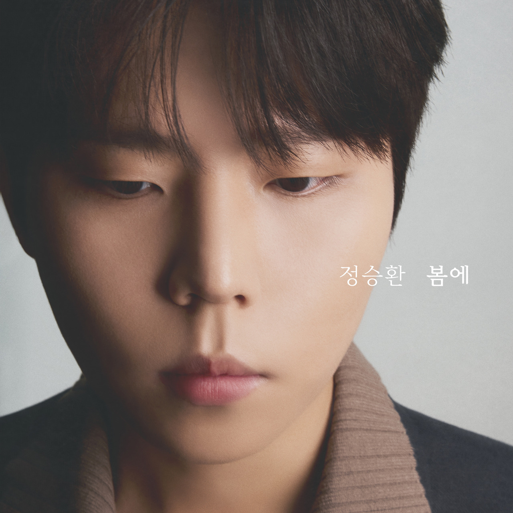

안녕하세요, 라보엠입니다.
오늘은 2025년 5월 13일, 약 2년 만에 정승환이 군 복무를 마치고 발표한 신곡 ‘하루만 더’를 소개합니다. 데뷔 초창기 감성을 오롯이 담은 이 곡은, ‘너였다면’ 이후 또 한 번 정승환표 명품 발라드의 귀환을 알리며 많은 이들의 기대를 모으고 있습니다.
‘하루만 더’ – 누구나 공감할 짝사랑의 애틋함
‘하루만 더’는 누구나 한 번쯤 경험했을 가슴 아픈 짝사랑의 감정을 담은 스탠다드 발라드입니다. 애써 마음을 정리하려 해도, 결국 다시 상대를 바라보게 되는 무력한 마음. 정승환은 “오래전부터 이런 짝사랑 이야기를 노래로 만들고 싶었다”며, 직접 작사에 참여해 진정성을 더했습니다. 특히, 일본 애니메이션 ‘초속 5센티미터’의 짝사랑 에피소드에서 큰 영감을 받아 곡을 완성했다고 밝혔습니다.
가사에는 “보내고 붙잡고 혼자 무너지는 날 넌 모르겠지만”, “사랑한다 사랑한다 삼켜낸다 어쩌면 영영 못할 말”처럼, 삼켜낸 감정과 말하지 못한 사랑의 아픔이 담담하게 그려집니다. 절제된 멜로디 위에 실린 정승환 특유의 호소력 짙은 목소리는, 듣는 이의 마음을 깊이 울립니다.
‘하루만 더’는 데뷔 초 ‘이 바보야’, ‘너였다면’에서 느낄 수 있었던 정승환만의 섬세한 서정성과 애절함이 고스란히 담긴 곡입니다. 어쿠스틱 기타로 시작해 후반부로 갈수록 화려하게 몰입감을 높이는 편곡, 그리고 정승환의 진솔한 감정선이 어우러져 곡의 완성도를 한층 끌어올렸습니다.
‘하루만 더’가 가진 의미와 기대감
‘하루만 더’는 오랜 친구이자 프로듀서와의 협업으로, 2024년 말부터 본격적으로 작업이 시작되었습니다. 정승환은 “군대에 있으면서 무대가 정말 그리웠다”며, 전역 후 곡 작업에 몰두했다고 합니다. 이번 싱글은 정승환이 직접 곡의 주도권을 쥐고 만들어낸 결과물로, 군악대에서의 경험과 성장도 자연스럽게 녹아 있습니다.
정승환은 “봄에도 떠올릴 수 있는 가수가 되고 싶다”고 말합니다. ‘하루만 더’는 봄의 시작처럼 얼어 있던 감정이 서서히 피어나는 순간, 그리고 누구나 겪는 이별과 짝사랑의 아픔을 섬세하게 그려냅니다.
군백기 이후, 더 깊어진 감성의 귀환
정승환은 2023년 7월 군악대 입대 이후 2025년 1월 전역, 오랜만에 무대에 복귀하며 “군 생활을 거치며 조금 더 어른이 된 느낌”이라고 소감을 전했습니다. 복귀 후 첫 공식 행보로 내놓은 싱글 ‘봄에’의 타이틀곡 ‘하루만 더’는, 얼어 있던 감정이 봄처럼 다시 움트는 시기와 맞물려 더욱 특별한 의미를 지닙니다. 정승환은 “군 복무를 끝내갈 무렵부터 다시 가수로서의 행보를 고민했고, 오랜만의 컴백이라 유독 긴장이 된다”고 밝혔죠.
맺음말
정승환의 ‘하루만 더’는 군백기 이후 한층 깊어진 감성, 그리고 누구나 공감할 수 있는 짝사랑의 애틋함을 담아낸 정승환표 시그니처 발라드입니다. 봄날처럼 다시 피어나는 사랑의 감정, 그리고 말하지 못한 마음을 담은 이 곡이 여러분의 플레이리스트에 오랫동안 남길 바랍니다. 오늘 하루, 정승환의 ‘하루만 더’와 함께, 잊지 못할 감동과 여운을 느껴보세요.
